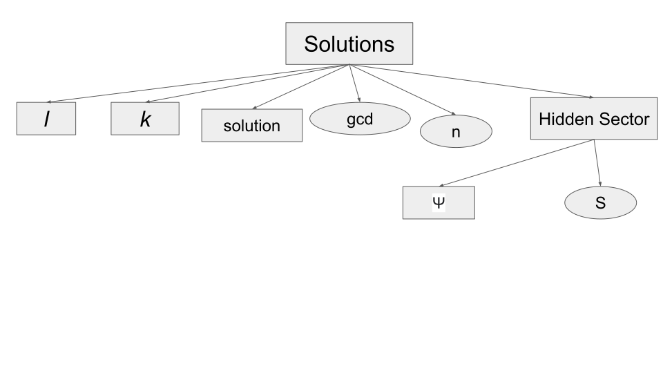

Data Analysis
Contents
Data Analysis#
Solutions object#
Obtain the Hidden Sector from: https://zenodo.org/record/5526707#.YzwIANJBzeQ and add the missing the column Hidden Sector of the following data scheme

Example of entry#
from IPython.display import JSON
import pandas as pd
JSON({'A':1})
<IPython.core.display.JSON object>
JSON(([{'l':[1,3],'k':[2],
'solution':[1,2,-3,4,5],'gcd':1,'n':5,
'hidden':[{'ψ':[(1,5),(2,4),(-3,)],
'S':6}
]
}]
)
)
<IPython.core.display.JSON object>
import pandas as pd
pd.DataFrame([{'l':[1,3],'k':[2],
'solution':[1,2,-3,4,5],'gcd':1,'n':5,
'hidden':[{'ψ':[(1,5),(2,4),(-3,)],
'S':6}
]
}]
)
| l | k | solution | gcd | n | hidden | |
|---|---|---|---|---|---|---|
| 0 | [1, 3] | [2] | [1, 2, -3, 4, 5] | 1 | 5 | [{'ψ': [(1, 5), (2, 4), (-3,)], 'S': 6}] |
Read the full dataset#
df=pd.read_json('https://zenodo.org/record/5526707/files/solutions.json?download=1')
FULL=True
if FULL:
#From https://zenodo.org/record/7380817/files/solutions.json.gz?download=1
df=pd.read_json('solutions.json.gz')
df=df[df['solution'].str[-1].abs()<=20].reset_index(drop=True)
df[df['n']==5].shape
(3, 5)
df.shape
The solutions column, was generated with an ordering in absolute value, like the following
sorted([-2,1,-8,5],key=abs)
[1, -2, 5, -8]
This allows to take the maximum directly from the last element
df['solution'].str[-1]
0 9
1 10
2 20
3 22
4 25
..
390069 32
390070 32
390071 -32
390072 32
390073 32
Name: solution, Length: 390074, dtype: int64
df['zmax']=df['solution'].str[-1].abs()
df=df.sort_values(['n','zmax']).reset_index(drop=True)
#How many solutions with n=12 and z_max <= 20?
df[ (df['n']==12) & (df['zmax']<=20) ].shape
(65910, 6)
df[df['n']==5]
| l | k | solution | gcd | n | zmax | |
|---|---|---|---|---|---|---|
| 0 | [-2] | [2, 3] | [1, 5, -7, -8, 9] | 4 | 5 | 9 |
| 1 | [3] | [-3, -2] | [2, 4, -7, -9, 10] | 18 | 5 | 10 |
| 2 | [-2] | [3, 1] | [1, 14, -17, -18, 20] | 6 | 5 | 20 |
Ask question to the solutions object#
Test the solution
Which is the minimum hidden sector and with the least charge in absolute value
Check for multigenerational solution
Check for unconditional stability
Solutions with active symmetry
How many solutions with n=12 and zmax<=20
Check for Majorana and Dirac fermions
Which n are allowed?
hs['n'].unique()
array([ 8, 12])
pd.set_option('display.max_colwidth',200)
What is the minimum n?
hs['n'].min()
8
What is the minimum z_max?
hs['zmax'].min()
6
hs[hs['zmax']==hs['zmax'].min()]
| l | k | solution | gcd | n | zmax | hidden | |
|---|---|---|---|---|---|---|---|
| 0 | [-1, -5, -3] | [-6, -4, -7] | [1, 1, 2, 3, -4, -4, -5, 6] | 1 | 8 | 6 | [{'S': 2, 'ψ': [(3, -5), (2, -4), (-4, 6), (1, 1)]}] |
| 1773 | [-1, 0, -1, 0, 1] | [-3, -2, -3, -2, 2] | [1, -2, -2, -2, 3, 3, 4, 4, -5, -5, -5, 6] | 1 | 12 | 6 | [{'S': 1, 'ψ': [(-5, 6), (-2, 3), (4, -5), (1, -2)]}, {'S': 7, 'ψ': [(3, 4), (1, 6), (-2, -5)]}] |
| 1774 | [2, 1, -1, 3, -1] | [-3, -1, 0, -2, -3] | [1, 1, 1, 1, -2, -2, -2, 3, 3, -5, -5, 6] | 1 | 12 | 6 | [{'S': 4, 'ψ': [(-2, -2), (1, -5), (-2, 6), (1, 3)]}] |
How many solutions have several dark sectors?
hs[hs['hidden'].apply(len)>1].shape
(1271, 7)
hs[hs['hidden'].apply(len)>2].shape
(0, 7)
hs['hidden'].str[0].str['ψ']
0 [(3, -5), (2, -4), (-4, 6), (1, 1)]
1 [(2, 2), (-3, 7), (1, -5), (2, -6)]
2 [(4, 5), (1, 8), (-2, -7)]
3 [(4, -7), (-5, 8), (2, -5), (1, 2)]
4 [(-6, 7), (7, -8), (5, -6), (2, -3), (-4, 5)]
...
9461 [(4, -19), (3, -18), (-13, 28), (17, -32), (6, 9)]
9462 [(-9, 27), (-6, -12), (1, -19), (4, 14), (-9, -9), (14, -32), (-8, 26)]
9463 [(-4, -5), (18, -27), (3, 6), (-5, 14), (-23, 32), (14, -23)]
9464 [(12, -27), (4, -19), (-13, 28), (17, -32), (-9, 24)]
9465 [(6, 18), (5, 19), (-4, -20), (3, -27), (2, -26), (-8, 32)]
Name: hidden, Length: 9466, dtype: object
What is the minimum number of DM particles?
hs['hidden'].str[0].str['ψ'].apply(len).min()
3
What is the minimum number of DM particles?
hs['hidden'].str[-1].str['ψ'].apply(len).min()
3
hs.loc[[1773]]['hidden'].str[-1]
1773 {'S': 7, 'ψ': [(3, 4), (1, 6), (-2, -5)]}
Name: hidden, dtype: object
hs.loc[[1773]]['hidden'].str[0]
1773 {'S': 1, 'ψ': [(-5, 6), (-2, 3), (4, -5), (1, -2)]}
Name: hidden, dtype: object
hs[(hs['hidden'].str[0].str['ψ'].apply(len)==3)].shape
(221, 7)
to capture the cases with until with two dark sectors:
hs[(hs['hidden'].str[0].str['ψ'].apply(len)==3) |
(hs['hidden'].str[-1].str['ψ'].apply(len)==3)]
| l | k | solution | gcd | n | zmax | hidden | |
|---|---|---|---|---|---|---|---|
| 2 | [-1, 0, 1] | [-4, -2, 2] | [1, -2, -2, 4, 5, -7, -7, 8] | 1 | 8 | 8 | [{'S': 9, 'ψ': [(4, 5), (1, 8), (-2, -7)]}] |
| 7 | [2, 0, -1] | [-8, -5, 9] | [2, -3, -3, 5, 6, -8, -8, 9] | 1 | 8 | 9 | [{'S': 11, 'ψ': [(5, 6), (-3, -8), (2, 9)]}] |
| 9 | [0, -3, -1] | [-3, -5, -6, -4] | [3, -4, -6, -6, 7, 7, 8, -9] | 1 | 8 | 9 | [{'S': 1, 'ψ': [(8, -9), (-6, 7), (3, -4)]}] |
| 11 | [-1, 0, -1] | [-2, 1, -1] | [2, -5, -5, -5, 7, 8, 8, -10] | 1 | 8 | 10 | [{'S': 3, 'ψ': [(7, -10), (-5, 8), (2, -5)]}] |
| 14 | [-3, -5, 1] | [-6, -4, -5] | [3, -4, -4, 6, 7, -9, -9, 10] | 1 | 8 | 10 | [{'S': 13, 'ψ': [(3, 10), (-4, -9), (6, 7)]}] |
| ... | ... | ... | ... | ... | ... | ... | ... |
| 7956 | [1, -2, 1, 0, 1] | [-2, -1, -2, -1, -2] | [1, 1, -2, -2, -16, -16, -16, 17, 17, 17, 28, -29] | 1 | 12 | 29 | [{'S': 1, 'ψ': [(-16, 17), (28, -29), (1, -2)]}] |
| 7959 | [-2, 1, -2, 0, 2] | [-2, 1, -2, 1, -1] | [4, -8, -8, -8, 11, 11, 22, 22, -25, -25, -25, 29] | 3 | 12 | 29 | [{'S': 33, 'ψ': [(4, 29), (11, 22), (-8, -25)]}] |
| 7991 | [-1, 0, -2, 0, -2] | [-3, 1, -3, 1, -3] | [7, 7, -9, -9, -9, 17, 19, -27, -27, -27, 29, 29] | 4 | 12 | 29 | [{'S': 36, 'ψ': [(7, 29), (-9, -27), (17, 19)]}] |
| 7997 | [-2, 0, -2, 0, -2] | [-3, 2, -3, 3, -3] | [16, 16, -19, -19, -19, -21, -21, 24, 24, 24, 24, -29] | 8 | 12 | 29 | [{'S': 5, 'ψ': [(-19, 24), (24, -29), (16, -21)]}] |
| 9242 | [2, 0, 1, 0, 2] | [-3, -2, -3, -2, -3] | [2, 7, 18, 18, 18, -23, -23, -27, -27, -27, 32, 32] | 1 | 12 | 32 | [{'S': 9, 'ψ': [(18, -27), (2, 7), (-23, 32)]}] |
233 rows × 7 columns
What is the maximum number of DM particles?
hs['hidden'].str[0].str['ψ'].apply(len).max()
9
What is the maximum number of DM particles?
hs['hidden'].str[-1].str['ψ'].apply(len).max()
9
hs[(hs['hidden'].str[0].str['ψ'].apply(len)==9)][:1]
| l | k | solution | gcd | n | zmax | hidden | |
|---|---|---|---|---|---|---|---|
| 2019 | [-1, 0, -1, -2, -1] | [-3, -2, 2, 1, -1] | [1, 1, 2, 3, -5, -6, -6, -7, 9, 10, 11, -13] | 2 | 12 | 13 | [{'S': 4, 'ψ': [(9, -13), (-5, 9), (-6, 10), (2, 2), (1, 3), (-7, 11), (3, -7), (1, -5), (2, -6)]}, {'S': 12, 'ψ': [(-5, -7), (3, 9), (-6, -6), (1, -13), (1, 11), (2, 10)]}] |
What is the minimum number of independent DM particles?
lst=[{'S': 3, 'ψ': [(-17, 20), (-23, 20), (14, -17)]}]
def intersections(lst,mask=True):
lstc=lst.copy()
lenmax=float('inf')
for d in lst:
for p in d.get('ψ'):
dd=d.get('ψ').copy()
dd.remove(p)
[dd.remove(q) for q in dd.copy() if set(p).intersection(set(q))]
if len(dd) < lenmax:
ddd=dd.copy()
lenmax=len(dd)
if mask and not dd:
return True
if mask:
return False
return ddd
assert intersections([{'S': 3, 'ψ': [(-17, 20), (-23, 20), (14, -17)]}])
assert not intersections([{'S': 3, 'ψ': [(-17, 20), (-7, 20), (14, -17), (2,5)]}])
One excluded:
hs[hs['hidden'].apply(intersections)]
| l | k | solution | gcd | n | zmax | hidden |
|---|
The minimum is…
hs['~intersections']=hs['hidden'].apply(lambda lst: intersections(lst,mask=False))
hs[hs['~intersections'].apply(len)==hs['~intersections'].apply(len).min()].sort_values('n')
| l | k | solution | gcd | n | zmax | hidden | ~intersections | |
|---|---|---|---|---|---|---|---|---|
| 3 | [1, 2, 1] | [-5, -10, -11] | [1, 2, 2, 4, -5, -5, -7, 8] | 1 | 8 | 8 | [{'S': 3, 'ψ': [(4, -7), (-5, 8), (2, -5), (1, 2)]}] | [(4, -7)] |
| 1121 | [0, -1, -2] | [-1, -4, -1, 1] | [4, 4, 11, 11, -14, -19, -26, 29] | 1 | 8 | 29 | [{'S': 15, 'ψ': [(4, -19), (11, -26), (4, 11), (-14, 29)]}] | [(-14, 29)] |
| 950 | [-1, 0, -1] | [-4, 1, -1] | [7, 7, 7, 8, -13, -22, -22, 28] | 1 | 8 | 28 | [{'S': 15, 'ψ': [(7, -22), (-13, 28), (7, 8)]}] | [(-13, 28)] |
| 937 | [-6, -5, -1] | [-6, -8, -6] | [8, -15, -15, -15, 20, 22, 22, -27] | 4 | 8 | 27 | [{'S': 7, 'ψ': [(8, -15), (20, -27), (-15, 22)]}] | [(20, -27)] |
| 843 | [-2, 0, -2] | [-3, 2, -2] | [13, -18, -18, -18, 22, 23, 23, -27] | 4 | 8 | 27 | [{'S': 5, 'ψ': [(22, -27), (13, -18), (-18, 23)]}] | [(22, -27)] |
| 833 | [1, 0, -1] | [-9, -7, 7] | [3, -11, -13, -13, 19, 21, 21, -27] | 2 | 8 | 27 | [{'S': 8, 'ψ': [(-11, 19), (-13, 21), (19, -27), (3, -11)]}] | [(-13, 21)] |
| 832 | [-1, 0, -1] | [-9, 1, -1] | [3, 3, 3, -7, 17, -23, -23, 27] | 4 | 8 | 27 | [{'S': 20, 'ψ': [(3, 17), (-7, 27), (3, -23)]}] | [(-7, 27)] |
| 799 | [6, 4, 6] | [-6, -7, -1, 0] | [9, -14, -16, -16, 21, 21, 21, -26] | 4 | 8 | 26 | [{'S': 5, 'ψ': [(-16, 21), (21, -26), (9, -14)]}] | [(9, -14)] |
| 744 | [0, -2, 0] | [-2, -5, -2, 2] | [2, 2, 2, -5, 19, -23, -23, 26] | 4 | 8 | 26 | [{'S': 21, 'ψ': [(-5, 26), (2, 19), (2, -23)]}] | [(-5, 26)] |
| 461 | [0, -1, -2] | [-1, -5, -1, 1] | [5, 5, 7, 7, -11, -17, -19, 23] | 2 | 8 | 23 | [{'S': 12, 'ψ': [(5, 7), (-11, 23), (7, -19), (5, -17)]}] | [(-11, 23)] |
| 447 | [-1, 0, 1] | [-11, -7, 7] | [1, -7, -7, 11, -13, 19, 19, -23] | 2 | 8 | 23 | [{'S': 12, 'ψ': [(11, -23), (1, -13), (1, 11), (-7, 19)]}] | [(-7, 19)] |
| 222 | [-1, -2, -1] | [-4, 1, -6] | [4, -9, -9, -11, 14, 14, 16, -19] | 4 | 8 | 19 | [{'S': 5, 'ψ': [(-9, 14), (-11, 16), (14, -19), (4, -9)]}] | [(-11, 16)] |
| 1684 | [2, -3, 2] | [-2, -4, -2, 0] | [17, -22, -22, -23, 27, 27, 28, -32] | 4 | 8 | 32 | [{'S': 5, 'ψ': [(17, -22), (27, -32), (-23, 28), (-22, 27)]}] | [(-23, 28)] |
| 126 | [1, 0, -1] | [-11, -7, 7] | [1, 5, 7, 7, -11, -13, -13, 17] | 4 | 8 | 17 | [{'S': 6, 'ψ': [(5, -11), (-11, 17), (1, 5), (7, -13)]}] | [(7, -13)] |
| 120 | [-1, 0, -1] | [-2, 2, -2] | [7, -10, -11, -11, 14, 14, 14, -17] | 1 | 8 | 17 | [{'S': 3, 'ψ': [(-11, 14), (7, -10), (14, -17)]}] | [(7, -10)] |
| 93 | [0, -1, 0] | [-1, -4, -1, 1] | [1, 1, 1, -4, -11, 14, 14, -16] | 1 | 8 | 16 | [{'S': 15, 'ψ': [(1, 14), (1, -16), (-4, -11)]}] | [(-4, -11)] |
| 53 | [0, -1, 0] | [-1, -6, -9, -6] | [1, -6, -6, -6, 9, 11, 11, -14] | 2 | 8 | 14 | [{'S': 5, 'ψ': [(-6, 11), (9, -14), (1, -6)]}] | [(9, -14)] |
| 40 | [-1, -2, -1] | [-1, 1, -2] | [4, -7, -7, -8, 10, 10, 11, -13] | 1 | 8 | 13 | [{'S': 3, 'ψ': [(4, -7), (10, -13), (-7, 10), (-8, 11)]}] | [(-8, 11)] |
| 39 | [-1, 0, 1] | [-9, -7, 5] | [1, -5, -5, -7, 9, 9, 11, -13] | 2 | 8 | 13 | [{'S': 4, 'ψ': [(9, -13), (-5, 9), (-7, 11), (1, -5)]}] | [(-7, 11)] |
| 38 | [0, -1, 0] | [-1, -5, -1, 1] | [1, 1, 1, -5, -7, 11, 11, -13] | 2 | 8 | 13 | [{'S': 12, 'ψ': [(1, 11), (-5, -7), (1, -13)]}] | [(-5, -7)] |
| 36 | [0, -1, 0] | [-1, -2, 2, -2] | [2, -5, -7, -7, 10, 10, 10, -13] | 1 | 8 | 13 | [{'S': 3, 'ψ': [(-7, 10), (10, -13), (2, -5)]}] | [(2, -5)] |
| 11 | [-1, 0, -1] | [-2, 1, -1] | [2, -5, -5, -5, 7, 8, 8, -10] | 1 | 8 | 10 | [{'S': 3, 'ψ': [(7, -10), (-5, 8), (2, -5)]}] | [(7, -10)] |
| 10 | [1, -3, -2] | [-4, -9, -5, -3] | [1, 3, 3, 3, -5, -7, -7, 9] | 1 | 8 | 9 | [{'S': 4, 'ψ': [(1, -5), (-5, 9), (3, -7), (1, 3)]}] | [(3, -7)] |
| 196 | [-1, 0, -1] | [-3, 3, -3] | [5, -9, -11, -11, 15, 15, 15, -19] | 2 | 8 | 19 | [{'S': 4, 'ψ': [(-11, 15), (5, -9), (15, -19)]}] | [(5, -9)] |
| 2334 | [-1, -2, -1, -2, -1] | [-1, -3, -1, -3, -1] | [1, 1, 1, -5, -5, 7, 7, -9, -9, 13, 13, -15] | 2 | 12 | 15 | [{'S': 8, 'ψ': [(1, -9), (7, -15), (-5, 13), (1, 7)]}, {'S': 14, 'ψ': [(-5, -9), (1, -15), (7, 7), (1, 13)]}] | [(-5, 13)] |
| 2898 | [-3, 0, -1, 0, -1] | [-3, -2, -3, -2, -3] | [3, 3, -7, -7, -7, -8, -8, 12, 12, 12, 12, -17] | 4 | 12 | 17 | [{'S': 5, 'ψ': [(12, -17), (-7, 12), (3, -8)]}] | [(3, -8)] |
| 4340 | [-2, 0, -2, 0, -2] | [-3, 2, -3, 2, -2] | [9, -14, -14, -14, -14, 16, 16, 19, 19, 19, -21, -21] | 8 | 12 | 21 | [{'S': 5, 'ψ': [(9, -14), (-14, 19), (16, -21)]}] | [(16, -21)] |
| 7139 | [-1, -2, -1, -2, -1] | [-1, 1, -3, 1, -3] | [3, -11, -11, -17, -17, 19, 19, 19, 25, 25, -27, -27] | 2 | 12 | 27 | [{'S': 8, 'ψ': [(-17, 25), (-11, 19), (19, -27), (3, -11)]}] | [(-17, 25)] |
| 6411 | [-1, 0, -1, 0, -1] | [-2, 2, -2, 2, -2] | [11, -14, -19, -19, -19, 22, 22, 22, 22, 22, -25, -25] | 1 | 12 | 25 | [{'S': 3, 'ψ': [(22, -25), (11, -14), (-19, 22)]}] | [(11, -14)] |
| 6412 | [1, 0, -1, 0, -1] | [-3, 3, -3, 3, -3] | [3, -7, -17, -17, -17, 21, 21, 21, 21, 21, -25, -25] | 2 | 12 | 25 | [{'S': 4, 'ψ': [(21, -25), (-17, 21), (3, -7)]}] | [(3, -7)] |
| 6761 | [2, 0, -2, 0, -2] | [-3, -2, 2, -2, 2] | [9, 9, -14, -14, -14, -14, -14, 19, 19, 19, 21, -26] | 4 | 12 | 26 | [{'S': 5, 'ψ': [(21, -26), (9, -14), (-14, 19)]}] | [(21, -26)] |
| 2281 | [-1, 0, -1, 0, -1] | [-3, 1, -3, 1, -1] | [3, 5, 5, 5, 5, -7, -7, -13, -13, -13, 15, 15] | 2 | 12 | 15 | [{'S': 8, 'ψ': [(-7, 15), (5, -13), (3, 5)]}] | [(-7, 15)] |
| 5293 | [1, 0, -1, 0, 1] | [-3, -1, -3, 3, -3] | [3, 3, 5, 5, 7, 7, 7, -15, -15, -15, -15, 23] | 2 | 12 | 23 | [{'S': 8, 'ψ': [(7, -15), (-15, 23), (3, 5)]}] | [(3, 5)] |
| 2121 | [-1, -2, -1, -2, -1] | [-1, 1, -2, 1, -2] | [5, -8, -8, -10, -10, 11, 11, 11, 13, 13, -14, -14] | 2 | 12 | 14 | [{'S': 3, 'ψ': [(5, -8), (-10, 13), (11, -14), (-8, 11)]}] | [(-10, 13)] |
| 1848 | [-1, -2, -1, 0, -1] | [-1, -2, -1, 1, -1] | [1, -4, -4, -4, 7, 7, 7, 7, -8, -10, -10, 11] | 1 | 12 | 11 | [{'S': 3, 'ψ': [(-4, 7), (1, -4), (7, -10), (-8, 11)]}] | [(-8, 11)] |
| 1988 | [-1, 0, -1, 0, -1] | [-2, 1, -2, 2, -2] | [5, 5, -7, -7, -7, -8, -8, 10, 10, 10, 10, -13] | 2 | 12 | 13 | [{'S': 3, 'ψ': [(5, -8), (-7, 10), (10, -13)]}] | [(5, -8)] |
| 1985 | [-2, 0, -2, 3, -2] | [-3, 2, -3, 2, -3] | [2, 2, 3, 3, 3, 3, 3, -7, -8, -8, -8, 12] | 15 | 12 | 12 | [{'S': 5, 'ψ': [(2, 3), (2, -7), (-7, 12), (3, -8)]}] | [(-7, 12)] |
| 1898 | [-1, -2, -3, -2, -1] | [-3, 1, -3, -1, -3] | [1, 1, 1, 3, -5, -5, -5, -5, 7, 9, 9, -11] | 2 | 12 | 11 | [{'S': 4, 'ψ': [(-5, 9), (7, -11), (1, 3), (1, -5)]}, {'S': 10, 'ψ': [(3, 7), (1, 9), (-5, -5), (1, -11)]}] | [(7, -11)] |
| 1849 | [-1, -2, -1, 0, -1] | [-1, 1, -2, 1, -1] | [2, 2, -4, -5, -5, -5, -5, 7, 8, 8, 8, -11] | 1 | 12 | 11 | [{'S': 3, 'ψ': [(-4, 7), (-5, 8), (2, -5), (8, -11)]}] | [(-4, 7)] |
| 1794 | [1, 0, -2, 0, -2] | [-3, -1, -3, -1, 1] | [1, 1, 1, 1, -3, -3, -5, -5, 7, 7, 7, -9] | 2 | 12 | 9 | [{'S': 2, 'ψ': [(-5, 7), (7, -9), (1, 1), (1, -3)]}, {'S': 8, 'ψ': [(1, 7), (1, -9), (-3, -5)]}] | [(-3, -5)] |
| 1783 | [-1, 0, -1, 0, -1] | [-2, 1, -2, 1, -1] | [1, -4, -4, -4, -4, 5, 5, 7, 7, 7, -8, -8] | 2 | 12 | 8 | [{'S': 3, 'ψ': [(5, -8), (1, -4), (-4, 7)]}] | [(5, -8)] |
| 1781 | [1, 0, -3, -2, 1] | [-2, -1, -2, -3, 0] | [1, 2, 3, 3, 3, -4, -4, -6, -6, -6, 7, 7] | 1 | 12 | 7 | [{'S': 3, 'ψ': [(-4, 7), (3, -6), (1, -4), (1, 2)]}] | [(3, -6)] |
| 1779 | [2, -1, 2, -1, 2] | [-3, -2, -1, -2, -1] | [2, -3, -5, -5, -5, 6, 6, 6, 6, 6, -7, -7] | 2 | 12 | 7 | [{'S': 1, 'ψ': [(6, -7), (2, -3), (-5, 6)]}] | [(2, -3)] |
| 1776 | [-1, -2, -1, 0, -1] | [-2, 1, -1, 1, -1] | [1, 1, 1, 2, 2, 2, 2, -4, -4, -5, -5, 7] | 1 | 12 | 7 | [{'S': 3, 'ψ': [(1, -4), (1, 2), (-4, 7), (2, -5)]}] | [(2, -5)] |
| 7955 | [-1, 0, -1, 0, -1] | [-3, 1, -3, 3, -3] | [7, 7, -13, -13, -13, -15, -15, 21, 21, 21, 21, -29] | 2 | 12 | 29 | [{'S': 8, 'ψ': [(-13, 21), (21, -29), (7, -15)]}] | [(7, -15)] |
| 2105 | [-1, 0, -1, 0, -1] | [-2, 1, -1, 1, -1] | [4, 4, -7, -7, -7, -7, -7, 10, 10, 10, 11, -14] | 1 | 12 | 14 | [{'S': 3, 'ψ': [(4, -7), (-7, 10), (11, -14)]}] | [(11, -14)] |
| 7997 | [-2, 0, -2, 0, -2] | [-3, 2, -3, 3, -3] | [16, 16, -19, -19, -19, -21, -21, 24, 24, 24, 24, -29] | 8 | 12 | 29 | [{'S': 5, 'ψ': [(-19, 24), (24, -29), (16, -21)]}] | [(16, -21)] |
Appendix: Same questions for Standard Model (SM) solutions#
Which are solutions with three repeated integers to be asigned to SM particles
df3=df[df['solution'].apply(lambda l: 3 in [l.count(x) for x in l])].reset_index(drop=True)
Remove the three repeated integers from the new hidden column
def get_dark(l,idx=0):
#TODO,
xxx=list(set([x for x in l if l.count(x)==3]))
if len(xxx)>=idx+1:
xx=xxx[idx]
return [x for x in l if x!=xx]
else:
return []
assert get_dark([1,1,2,2,2,3] )==[1, 1, 3]
assert get_dark([2,2,2,2,-5,-5,-5,7])==[2, 2, 2, 2, 7]
df3['hidden']=df3['solution'].apply(get_dark).apply(get_hidden_sector)
hs3=df3[df3['hidden'].apply(len)>0].reset_index(drop=True)
hs3.shape
(49, 7)
# idxmax==1
df3['hidden']=df3['solution'].apply(lambda l: get_dark(l,idx=1)).apply(get_hidden_sector)
hs3=pd.concat((hs3,df3[df3['hidden'].apply(len)>0])).reset_index(drop=True)
hs3.shape
(51, 7)
# idxmax==1
df3['hidden']=df3['solution'].apply(lambda l: get_dark(l,idx=2)).apply(get_hidden_sector)
hs3=pd.concat((hs3,df3[df3['hidden'].apply(len)>0])).reset_index(drop=True)
hs3.shape
(51, 7)
hs3['zmax'].min()
9
hs3[:1]
| l | k | solution | gcd | n | zmax | hidden | |
|---|---|---|---|---|---|---|---|
| 0 | [-3, -1, 2] | [1, 3, -3] | [3, 3, 3, 5, -7, -9, -11, 13] | 12 | 8 | 13 | [{'S': 18, 'ψ': [(-7, -11), (-9, -9), (5, 13)]}] |
hs3[hs3['hidden'].apply(len)>1].shape
(0, 7)
hs3[hs3['hidden'].apply(len)>2].shape
(0, 7)
hs3[hs3['hidden'].apply(len)>3].shape
(0, 7)
hs3['hidden'].str[0].str['ψ'].apply(len).min()
2
hs3[hs3['hidden'].str[0].str['ψ'].apply(len)==hs3['hidden'].str[0].str['ψ'].apply(len).min()]
| l | k | solution | gcd | n | zmax | hidden | |
|---|---|---|---|---|---|---|---|
| 2 | [-2, 0, 2] | [-2, 1, 0, -2] | [1, 1, -4, -5, 9, 9, 9, -10, -10] | 4 | 9 | 10 | [{'S': 9, 'ψ': [(1, -10), (-4, -5)]}] |
| 3 | [1, 0, -1] | [-3, 3, 0, -3] | [1, 1, -3, -8, 11, 11, 11, -12, -12] | 9 | 9 | 12 | [{'S': 11, 'ψ': [(1, -12), (-3, -8)]}] |
| 5 | [3, 0, -3] | [-2, 2, 0, -2] | [4, -5, -5, -6, -6, 11, 11, 11, -15] | 8 | 9 | 15 | [{'S': 11, 'ψ': [(-5, -6), (4, -15)]}] |
| 12 | [2, 0, -2] | [2, -2, 0, -3] | [2, 2, -3, 15, 15, -17, -17, -17, 20] | 4 | 9 | 20 | [{'S': 17, 'ψ': [(-3, 20), (2, 15)]}] |
Check if sum([L,L,L,x,y]) where (x,y) = ±S
def check_L(r):
L=[x for x in r.get('solution') if r.get('solution').count(x)==3 ]
for LL in L[::3]:
z=r.get('hidden')[0]
for p in z.get('ψ'):
if 3*LL+sum(list(p))==0:
return list(p)
return []
assert check_L({'solution':[4,4,4,5,-8,-10,13,-9, -9, -9, 15, 15, 15],
'hidden':[{'S': 18, 'ψ': [(-9, -9), (-8, -10), (5, 13)]}]})==[]
hs3[hs3.apply(check_L,axis='columns').apply(len)>0].reset_index(drop=True)
| l | k | solution | gcd | n | zmax | hidden | |
|---|---|---|---|---|---|---|---|
| 4 | [-2, -3, 0] | [1, 2, 3, 2] | [5, 6, 6, 6, -8, -9, -9, -10, 13] | 4 | 9 | 13 | [{'S': 18, 'ψ': [(-9, -9), (-8, -10), (5, 13)]}] |
| 7 | [2, 0, 3] | [-2, 1, -3, -1] | [2, 3, 3, 3, 6, -8, -11, -15, 17] | 12 | 9 | 17 | [{'S': 9, 'ψ': [(2, -11), (6, -15), (-8, 17)]}] |
| 8 | [-4, -2, 1] | [2, -4, 4, -2] | [1, -2, 6, 6, 6, -9, -9, -16, 17] | 16 | 9 | 17 | [{'S': 18, 'ψ': [(-9, -9), (1, 17), (-2, -16)]}] |
| 10 | [3, -2, -4] | [-2, -1, -2, 3] | [1, 2, 3, -6, -6, -6, 15, 16, -19] | 2 | 9 | 19 | [{'S': 18, 'ψ': [(1, -19), (3, 15), (2, 16)]}] |
| 14 | [6, -3, 1] | [-1, -3, -6, -3] | [7, 9, 9, 9, -11, -12, -15, -16, 20] | 18 | 9 | 20 | [{'S': 27, 'ψ': [(7, 20), (-12, -15), (-11, -1... |
Extend the data scheme with number of generations#
def get_Dirac_and_Majorana_generations(l,h):
g=[]
dgmax=0
mgmax=0
for idx in range(len(h)):
for x,y in h[idx].get('ψ'):
if x!=y and l.count(x)>dgmax and l.count(y)==l.count(x):
dgmax=l.count(x)
if x==y and l.count(x)>mgmax:
mgmax=l.count(x)
g.append({'DG':dgmax,'MG':mgmax})
return g
l=[2, 2, -3, 15, 15, 20]
h=[{'S': 17, 'ψ': [(2, 15), (20, -3)]}]
assert get_Dirac_and_Majorana_generations(l,h)==[{'DG': 2, 'MG': 0}]
hs[:3].apply(lambda d: d['l']+d['k'],axis='columns')
0 [-1, -5, -3, -6, -4, -7]
1 [-1, 2, -2, -7, 4, 0]
2 [-1, 0, 1, -4, -2, 2]
dtype: object
hs['Generations']=hs.apply(lambda row: get_Dirac_and_Majorana_generations(row['solution'],row['hidden']),axis='columns')
hs3['Generations']=hs3.apply(lambda row: get_Dirac_and_Majorana_generations(row['solution'],row['hidden']),axis='columns')
hs['Gmax']=hs['Generations'].str[0].apply(lambda d: sum(d.values()))
hs=hs.sort_values(['Gmax'],ascending=False).reset_index(drop=True)
hs[hs['n']==8]
| l | k | solution | gcd | n | zmax | hidden | ~intersections | Generations | Gmax | |
|---|---|---|---|---|---|---|---|---|---|---|
| 157 | [3, 0, -5] | [-1, 1, -1] | [4, 4, 4, 11, -12, -13, -19, 21] | 8 | 8 | 21 | [{'S': 8, 'ψ': [(11, -19), (-13, 21), (4, 4), (4, -12)]}] | [(11, -19), (-13, 21)] | [{'DG': 1, 'MG': 3}] | 4 |
| 199 | [-1, 2, -2] | [-7, 4, 0] | [1, 2, 2, 2, -3, -5, -6, 7] | 1 | 8 | 7 | [{'S': 4, 'ψ': [(2, 2), (-3, 7), (1, -5), (2, -6)]}] | [(-3, 7), (1, -5)] | [{'DG': 1, 'MG': 3}] | 4 |
| 317 | [-3, -4, -3] | [-5, 3, -7] | [3, 5, 5, 7, -9, -15, -15, 19] | 2 | 8 | 19 | [{'S': 10, 'ψ': [(3, 7), (5, -15), (-9, 19), (5, 5)]}] | [(3, 7), (-9, 19)] | [{'DG': 2, 'MG': 2}] | 4 |
| 352 | [0, -1, -2] | [-1, -6, -5, -6] | [1, -6, -6, -6, 7, 11, 18, -19] | 2 | 8 | 19 | [{'S': 12, 'ψ': [(-6, -6), (-6, 18), (1, 11), (7, -19)]}] | [(1, 11), (7, -19)] | [{'DG': 1, 'MG': 3}] | 4 |
| 384 | [1, 0, -2] | [-3, -1, 1] | [3, 3, 3, 5, -7, -9, -11, 13] | 2 | 8 | 13 | [{'S': 6, 'ψ': [(5, -11), (3, -9), (3, 3), (-7, 13)]}] | [(5, -11), (-7, 13)] | [{'DG': 1, 'MG': 3}] | 4 |
| ... | ... | ... | ... | ... | ... | ... | ... | ... | ... | ... |
| 9320 | [-1, -2, -1] | [-5, 1, -3] | [3, 5, 5, -13, 15, -17, -23, 25] | 2 | 8 | 25 | [{'S': 8, 'ψ': [(-17, 25), (15, -23), (5, -13), (3, 5)]}] | [(-17, 25), (15, -23)] | [{'DG': 1, 'MG': 0}] | 1 |
| 9332 | [0, -1, -2] | [-1, -9, -6, -5] | [3, -4, -5, 9, 12, -16, -24, 25] | 1 | 8 | 25 | [{'S': 21, 'ψ': [(3, -24), (-5, -16), (-4, 25), (9, 12)]}] | [(-5, -16), (-4, 25), (9, 12)] | [{'DG': 1, 'MG': 0}] | 1 |
| 9333 | [0, -1, -2] | [-1, -5, -7, -5] | [1, 1, 5, -11, -13, 19, 23, -25] | 2 | 8 | 25 | [{'S': 24, 'ψ': [(5, 19), (1, -25), (1, 23), (-11, -13)]}] | [(5, 19), (-11, -13)] | [{'DG': 1, 'MG': 0}] | 1 |
| 9336 | [0, -2, 0] | [-4, -3, -7, -8] | [9, -11, -12, 14, -21, 22, 24, -25] | 4 | 8 | 25 | [{'S': 3, 'ψ': [(-11, 14), (-21, 24), (9, -12), (22, -25)]}] | [(-21, 24), (9, -12), (22, -25)] | [{'DG': 1, 'MG': 0}] | 1 |
| 9345 | [0, -1, -2] | [-1, -6, -8, -2] | [6, -7, -11, 14, 17, -20, -24, 25] | 1 | 8 | 25 | [{'S': 31, 'ψ': [(-11, -20), (6, 25), (-7, -24), (14, 17)]}] | [(6, 25), (-7, -24), (14, 17)] | [{'DG': 1, 'MG': 0}] | 1 |
1773 rows × 10 columns
hs[hs['n']==8][:6]
| l | k | solution | gcd | n | zmax | hidden | ~intersections | Generations | Gmax | |
|---|---|---|---|---|---|---|---|---|---|---|
| 157 | [3, 0, -5] | [-1, 1, -1] | [4, 4, 4, 11, -12, -13, -19, 21] | 8 | 8 | 21 | [{'S': 8, 'ψ': [(11, -19), (-13, 21), (4, 4), (4, -12)]}] | [(11, -19), (-13, 21)] | [{'DG': 1, 'MG': 3}] | 4 |
| 199 | [-1, 2, -2] | [-7, 4, 0] | [1, 2, 2, 2, -3, -5, -6, 7] | 1 | 8 | 7 | [{'S': 4, 'ψ': [(2, 2), (-3, 7), (1, -5), (2, -6)]}] | [(-3, 7), (1, -5)] | [{'DG': 1, 'MG': 3}] | 4 |
| 317 | [-3, -4, -3] | [-5, 3, -7] | [3, 5, 5, 7, -9, -15, -15, 19] | 2 | 8 | 19 | [{'S': 10, 'ψ': [(3, 7), (5, -15), (-9, 19), (5, 5)]}] | [(3, 7), (-9, 19)] | [{'DG': 2, 'MG': 2}] | 4 |
| 352 | [0, -1, -2] | [-1, -6, -5, -6] | [1, -6, -6, -6, 7, 11, 18, -19] | 2 | 8 | 19 | [{'S': 12, 'ψ': [(-6, -6), (-6, 18), (1, 11), (7, -19)]}] | [(1, 11), (7, -19)] | [{'DG': 1, 'MG': 3}] | 4 |
| 384 | [1, 0, -2] | [-3, -1, 1] | [3, 3, 3, 5, -7, -9, -11, 13] | 2 | 8 | 13 | [{'S': 6, 'ψ': [(5, -11), (3, -9), (3, 3), (-7, 13)]}] | [(5, -11), (-7, 13)] | [{'DG': 1, 'MG': 3}] | 4 |
| 392 | [0, -2, 0] | [-3, -1, 1, -1] | [5, 5, 5, -15, 19, -21, -29, 31] | 2 | 8 | 31 | [{'S': 10, 'ψ': [(-21, 31), (5, -15), (19, -29), (5, 5)]}] | [(-21, 31), (19, -29)] | [{'DG': 1, 'MG': 3}] | 4 |
hs[hs['n']==9][:3]
| l | k | solution | gcd | n | zmax | hidden | ~intersections | Generations | Gmax |
|---|
hs[hs['n']==11][:4]
| l | k | solution | gcd | n | zmax | hidden | ~intersections | Generations | Gmax |
|---|
hs[hs['n']==12][:4]
| l | k | solution | gcd | n | zmax | hidden | ~intersections | Generations | Gmax | |
|---|---|---|---|---|---|---|---|---|---|---|
| 0 | [-1, 0, -3, 0, -1] | [-1, 1, -1, -3, -1] | [5, 5, 7, 7, 7, 7, 7, -15, -19, -19, -21, 29] | 2 | 12 | 29 | [{'S': 14, 'ψ': [(-15, 29), (7, 7), (7, -21), (5, -19)]}] | [(-15, 29), (5, -19)] | [{'DG': 2, 'MG': 5}] | 7 |
| 1 | [1, 0, -2, 0, -2] | [-3, -1, 1, -1, 1] | [1, 1, 7, 7, 7, 7, 7, -11, -15, -15, -21, 25] | 2 | 12 | 25 | [{'S': 14, 'ψ': [(1, -15), (7, 7), (-11, 25), (7, -21)]}] | [(1, -15), (-11, 25)] | [{'DG': 2, 'MG': 5}] | 7 |
| 2 | [1, 0, -1, 0, -3] | [-2, 2, -2, 2, 3] | [3, -7, -8, -8, 14, 14, 14, 14, -20, -20, -21, 25] | 4 | 12 | 25 | [{'S': 28, 'ψ': [(-8, -20), (3, 25), (-7, -21), (14, 14)]}] | [(3, 25), (-7, -21), (14, 14)] | [{'DG': 2, 'MG': 4}] | 6 |
| 3 | [3, 0, -2, 0, -3] | [-1, 1, -1, 1, -1] | [1, 1, 1, 1, 1, -3, 5, -7, 8, -10, -10, 12] | 8 | 12 | 12 | [{'S': 2, 'ψ': [(1, -3), (8, -10), (-10, 12), (-3, 5), (5, -7), (1, 1)]}] | [(8, -10), (-10, 12), (5, -7)] | [{'DG': 1, 'MG': 5}] | 6 |
hs3['Gmax']=-hs3['Generations'].str[0].apply(lambda d: sum(d.values()))
hs3=hs3.sort_values(['n','Gmax']).reset_index(drop=True)
hs3[hs3['n']==8][:1]
| l | k | solution | gcd | n | zmax | hidden | Generations | Gmax | |
|---|---|---|---|---|---|---|---|---|---|
| 0 | [1, 0, -2] | [-3, -1, 1] | [3, 3, 3, 5, -7, -9, -11, 13] | 2 | 8 | 13 | [{'S': 18, 'ψ': [(-7, -11), (-9, -9), (5, 13)]}] | [{'DG': 1, 'MG': 1}] | -2 |
hs3[hs3['n']==9][:4]
| l | k | solution | gcd | n | zmax | hidden | Generations | Gmax | |
|---|---|---|---|---|---|---|---|---|---|
| 3 | [-2, -1, 0] | [-1, -3, -5, -3] | [5, 6, 6, 6, -8, -9, -9, -10, 13] | 2 | 9 | 13 | [{'S': 18, 'ψ': [(-9, -9), (-8, -10), (5, 13)]}] | [{'DG': 1, 'MG': 2}] | -3 |
| 4 | [1, -2, -1] | [-4, -9, -5, -3] | [1, -2, 6, 6, 6, -9, -9, -16, 17] | 6 | 9 | 17 | [{'S': 18, 'ψ': [(-9, -9), (1, 17), (-2, -16)]}] | [{'DG': 1, 'MG': 2}] | -3 |
| 5 | [-2, 0, 2] | [-1, 1, 0, -1] | [1, 1, -4, -5, 9, 9, 9, -10, -10] | 1 | 9 | 10 | [{'S': 9, 'ψ': [(1, -10), (-4, -5)]}] | [{'DG': 2, 'MG': 0}] | -2 |
| 6 | [-1, 0, 1] | [-1, -3, 0, -1] | [1, 1, -3, -8, 11, 11, 11, -12, -12] | 1 | 9 | 12 | [{'S': 11, 'ψ': [(1, -12), (-3, -8)]}] | [{'DG': 2, 'MG': 0}] | -2 |
hs3[hs3['n']==10][:5]
| l | k | solution | gcd | n | zmax | hidden | Generations | Gmax | |
|---|---|---|---|---|---|---|---|---|---|
| 43 | [-3, 3, 0, -6] | [-3, -2, 3, 4] | [3, 3, 3, -4, 9, 9, -10, -14, -27, 28] | 18 | 10 | 28 | [{'S': 18, 'ψ': [(-10, 28), (-4, -14), (9, -27), (9, 9)]}] | [{'DG': 1, 'MG': 2}] | -3 |
| 44 | [-1, 0, -4, -3] | [-3, 1, -1, -5] | [1, -3, -3, -3, -9, -9, 11, 17, 27, -29] | 2 | 10 | 29 | [{'S': 18, 'ψ': [(-9, 27), (11, -29), (1, 17), (-9, -9)]}] | [{'DG': 1, 'MG': 2}] | -3 |
| 45 | [3, -1, -3, 0] | [-2, -1, 1, -3, -4] | [3, 3, 3, 4, -6, -7, 9, -11, -12, 14] | 1 | 10 | 14 | [{'S': 18, 'ψ': [(-6, -12), (4, 14), (-7, -11), (9, 9)]}] | [{'DG': 1, 'MG': 1}] | -2 |
| 46 | [0, 1, 0, -2] | [-1, -3, 3, -1, -3] | [1, -5, -7, 9, -11, -13, 15, 15, 15, -19] | 4 | 10 | 19 | [{'S': 18, 'ψ': [(-5, -13), (1, -19), (-7, -11), (9, 9)]}] | [{'DG': 1, 'MG': 1}] | -2 |
| 47 | [1, 0, 2, 0] | [-3, 0, -3, -2, -1] | [1, -2, 3, 3, 3, -6, 9, -12, -19, 20] | 6 | 10 | 20 | [{'S': 18, 'ψ': [(-2, 20), (-6, -12), (1, -19), (9, 9)]}] | [{'DG': 1, 'MG': 1}] | -2 |
hs3[hs3['n']==11][:2]
| l | k | solution | gcd | n | zmax | hidden | Generations | Gmax | |
|---|---|---|---|---|---|---|---|---|---|
| 49 | [2, -1, 2, -1] | [-2, -1, -2, 2, 4] | [4, 5, 8, -9, -9, 10, -12, -12, -12, 13, 14] | 1 | 11 | 14 | [{'S': 18, 'ψ': [(5, 13), (4, 14), (-9, -9), (8, 10)]}] | [{'DG': 1, 'MG': 2}] | -3 |
| 50 | [2, 3, 0, -3, 3] | [0, -3, 1, -1, -3] | [1, 1, -2, -3, 6, 6, 6, -7, -10, -10, 12] | 15 | 11 | 12 | [{'S': 9, 'ψ': [(-3, 12), (1, -10), (-2, -7)]}] | [{'DG': 2, 'MG': 0}] | -2 |
hs3[hs3['n']==12][:5]
| l | k | solution | gcd | n | zmax | hidden | Generations | Gmax | |
|---|---|---|---|---|---|---|---|---|---|
| 64 | [1, -3, -2, 0, -1] | [-3, -1, -3, -1, -3] | [1, 1, 3, 3, 3, 5, 5, -7, -9, -9, -9, 13] | 2 | 12 | 13 | [{'S': 6, 'ψ': [(1, 5), (3, 3), (-7, 13), (1, -7)]}] | [{'DG': 2, 'MG': 3}] | -5 |
| 65 | [1, 0, 2, 0, 2] | [-3, -1, -3, -1, -3] | [7, 9, 9, 9, 11, -13, -13, -27, -27, -27, 31, 31] | 2 | 12 | 31 | [{'S': 18, 'ψ': [(9, 9), (7, 11), (-13, 31)]}] | [{'DG': 2, 'MG': 3}] | -5 |
| 66 | [-3, -1, -2, 3, -3] | [-3, -2, -3, -2, 0] | [3, 3, 3, 6, 7, -8, -9, -9, -9, -10, 11, 12] | 19 | 12 | 12 | [{'S': 18, 'ψ': [(6, 12), (-9, -9), (-8, -10), (7, 11)]}] | [{'DG': 1, 'MG': 3}] | -4 |
| 67 | [-3, -1, 2, 0, -3] | [-3, -2, -1, -2, -3] | [3, 4, -8, -9, -9, -9, -10, 14, 15, 15, 15, -21] | 12 | 12 | 21 | [{'S': 18, 'ψ': [(3, -21), (4, 14), (-9, -9), (-8, -10)]}] | [{'DG': 1, 'MG': 3}] | -4 |
| 68 | [-3, 0, -3, -1, 3] | [-3, -1, -3, -1, 1] | [2, 6, 6, 6, -7, -16, -20, -20, -20, 21, 21, 21] | 8 | 12 | 21 | [{'S': 14, 'ψ': [(2, -16), (-7, -7), (6, -20)]}] | [{'DG': 3, 'MG': 1}] | -4 |
hs3['~intersections']=hs3['hidden'].apply(lambda lst: intersections(lst,mask=False))
hs3[hs3['~intersections'].apply(len)==hs3['~intersections'].apply(len).min()].sort_values('n')
| l | k | solution | gcd | n | zmax | hidden | Generations | Gmax | ~intersections | |
|---|---|---|---|---|---|---|---|---|---|---|
| 5 | [-2, 0, 2] | [-1, 1, 0, -1] | [1, 1, -4, -5, 9, 9, 9, -10, -10] | 1 | 9 | 10 | [{'S': 9, 'ψ': [(1, -10), (-4, -5)]}] | [{'DG': 2, 'MG': 0}] | -2 | [(-4, -5)] |
| 6 | [-1, 0, 1] | [-1, -3, 0, -1] | [1, 1, -3, -8, 11, 11, 11, -12, -12] | 1 | 9 | 12 | [{'S': 11, 'ψ': [(1, -12), (-3, -8)]}] | [{'DG': 2, 'MG': 0}] | -2 | [(-3, -8)] |
| 7 | [-1, 0, -1, 1] | [-3, 0, -1, 0] | [4, -5, -5, -6, -6, 11, 11, 11, -15] | 1 | 9 | 15 | [{'S': 11, 'ψ': [(-5, -6), (4, -15)]}] | [{'DG': 2, 'MG': 0}] | -2 | [(4, -15)] |
| 8 | [-1, 0, 1] | [-1, -5, 0, 5] | [2, 2, -3, 15, 15, -17, -17, -17, 20] | 3 | 9 | 20 | [{'S': 17, 'ψ': [(-3, 20), (2, 15)]}] | [{'DG': 2, 'MG': 0}] | -2 | [(2, 15)] |
| 9 | [-1, 0, -1, 1] | [-3, 0, -3, 0] | [2, 2, -7, -12, 19, 19, 19, -21, -21] | 1 | 9 | 21 | [{'S': 19, 'ψ': [(-7, -12), (2, -21)]}] | [{'DG': 2, 'MG': 0}] | -2 | [(2, -21)] |
| 10 | [-1, 0, 1] | [-1, 1, 0, -7] | [3, 3, -4, 14, 14, -17, -17, -17, 21] | 3 | 9 | 21 | [{'S': 17, 'ψ': [(-4, 21), (3, 14)]}] | [{'DG': 2, 'MG': 0}] | -2 | [(3, 14)] |
| 11 | [1, 0, 1, -1] | [-3, 0, -3, 0] | [4, 4, -5, 15, 15, -19, -19, -19, 24] | 1 | 9 | 24 | [{'S': 19, 'ψ': [(4, 15), (-5, 24)]}] | [{'DG': 2, 'MG': 0}] | -2 | [(-5, 24)] |
| 64 | [1, -3, -2, 0, -1] | [-3, -1, -3, -1, -3] | [1, 1, 3, 3, 3, 5, 5, -7, -9, -9, -9, 13] | 2 | 12 | 13 | [{'S': 6, 'ψ': [(1, 5), (3, 3), (-7, 13), (1, -7)]}] | [{'DG': 2, 'MG': 3}] | -5 | [(3, 3)] |
Appendix: Use merge to compare two DataFrames#
df=pd.read_json('solutions.json.gz')
%%time
df['hidden']=df['solution'].apply(get_hidden_sector)
CPU times: user 11min 16s, sys: 719 ms, total: 11min 16s
Wall time: 11min 16s
hs2=df[df['hidden'].apply(len)>0].reset_index(drop=True)#.iloc[0].to_dict()
hs2.shape
(9466, 6)
Columns can only be compared if they are simple objects, like strings:
hs['ss'] = hs['solution'].apply(str)
hs2['ss'] = hs2['solution'].apply(str)
Increase the with of the columns for easier visualization.
pd.set_option('display.max_colwidth',200)
Compare the larger DataFrame (with filtered columns) against the smaller. The non on='s' repeated columns will appears with suffixes.
tmp=hs2[['ss','hidden']].merge(hs[['ss','hidden']],on='ss',how='left',suffixes=('_1','_2'))
#tmp=
tmp[tmp['hidden_2'].apply(lambda x: False if isinstance(x,list) else True )].reset_index(drop=True)
| ss | hidden_1 | hidden_2 | |
|---|---|---|---|
| 0 | [3, 3, -4, -4, -4, 5, -6, 7, -8, 9, 10, -11] | [{'S': 1, 'ψ': [(-6, 7), (7, -8), (5, -6), (-8, 9), (3, -4), (10, -11), (-4, 5)]}] | NaN |
| 1 | [1, -3, 5, -7, -7, -7, -8, 9, 9, 10, 12, -14] | [{'S': 2, 'ψ': [(1, -3), (-8, 10), (-3, 5), (5, -7), (1, 1), (-7, 9), (12, -14)]}] | NaN |
| 2 | [1, -2, -3, 4, 5, -7, -9, -9, 11, 11, 12, -14] | [{'S': 2, 'ψ': [(1, -3), (-9, 11), (-2, 4), (-3, 5), (5, -7), (1, 1), (12, -14)]}] | NaN |
| 3 | [1, -2, 3, -4, -6, 7, -8, 9, -10, 11, 14, -15] | [{'S': 1, 'ψ': [(14, -15), (-6, 7), (3, -4), (1, -2), (-8, 9), (-10, 11), (9, -10), (7, -8), (-2, 3)]}] | NaN |
| 4 | [1, 4, -5, -6, -7, -7, -9, 10, 11, 12, 12, -16] | [{'S': 5, 'ψ': [(11, -16), (1, -6), (-6, 11), (-5, 10), (1, 4), (-7, 12), (4, -9)]}] | NaN |
| 5 | [3, -4, 6, -9, 10, -11, -11, -12, 15, 17, 17, -21] | [{'S': 6, 'ψ': [(-11, 17), (-4, 10), (3, -9), (3, 3), (15, -21), (6, -12), (-9, 15)]}] | NaN |
| 6 | [4, -5, 8, -9, -11, 12, -13, 14, -15, 16, 21, -22] | [{'S': 1, 'ψ': [(-13, 14), (8, -9), (14, -15), (4, -5), (21, -22), (12, -13), (-11, 12), (-15, 16)]}] | NaN |
| 7 | [1, -2, 9, -10, -11, 12, -13, 14, -15, 16, 21, -22] | [{'S': 1, 'ψ': [(-13, 14), (14, -15), (1, -2), (21, -22), (12, -13), (-11, 12), (9, -10), (-15, 16)]}] | NaN |
| 8 | [1, -4, -5, 7, 8, -10, -11, 14, -17, 20, 20, -23] | [{'S': 3, 'ψ': [(-17, 20), (-11, 14), (20, -23), (-4, 7), (-5, 8), (1, -4), (8, -11), (7, -10), (14, -17)]}] | NaN |
| 9 | [6, -7, 9, -10, -12, 13, -14, 15, -16, 17, 22, -23] | [{'S': 1, 'ψ': [(-12, 13), (-14, 15), (6, -7), (-16, 17), (15, -16), (22, -23), (13, -14), (9, -10)]}] | NaN |
| 10 | [3, 4, 6, 11, -12, -13, 14, -15, -20, 21, -23, 24] | [{'S': 9, 'ψ': [(11, -20), (3, 6), (-12, 21), (-15, 24), (6, -15), (14, -23), (3, -12), (4, -13)]}] | NaN |
| 11 | [1, 2, 4, -7, -9, 10, 14, -15, 18, -19, -23, 24] | [{'S': 5, 'ψ': [(2, -7), (10, -15), (18, -23), (-19, 24), (1, 4), (-9, 14), (14, -19), (4, -9)]}] | NaN |
| 12 | [1, 3, 5, 7, -9, -11, -15, -15, 17, 19, 23, -25] | [{'S': 8, 'ψ': [(-15, 23), (1, -9), (-9, 17), (17, -25), (-11, 19), (7, -15), (3, 5), (1, 7), (3, -11)]}] | NaN |
| 13 | [1, -2, -3, -4, -5, -8, 9, 12, -16, 18, 23, -25] | [{'S': 7, 'ψ': [(-2, 9), (-2, -5), (-16, 23), (-3, -4), (18, -25), (9, -16), (-5, 12), (1, -8)]}] | NaN |
| 14 | [3, -5, -6, -9, 11, 12, 15, 16, -21, -21, -22, 27] | [{'S': 6, 'ψ': [(3, -9), (3, 3), (-6, 12), (-5, 11), (-21, 27), (16, -22), (15, -21), (-9, 15)]}] | NaN |
| 15 | [3, -8, -9, 14, 15, -19, -19, -21, 24, 25, 25, -30] | [{'S': 6, 'ψ': [(-19, 25), (3, -9), (3, 3), (24, -30), (15, -21), (-8, 14), (-9, 15)]}] | NaN |
| 16 | [3, -9, -14, 15, -17, -17, 20, -21, 23, 23, 24, -30] | [{'S': 6, 'ψ': [(-17, 23), (3, -9), (3, 3), (-14, 20), (24, -30), (15, -21), (-9, 15)]}] | NaN |
| 17 | [1, -3, -4, 6, 10, -16, -17, -20, 23, 24, 27, -31] | [{'S': 7, 'ψ': [(24, -31), (10, -17), (-3, 10), (-16, 23), (-3, -4), (-17, 24), (-20, 27), (1, 6)]}] | NaN |
tmp['zmax']=tmp['ss'].apply(eval).str[-1].abs()
tmp['n']=tmp['ss'].apply(eval).apply(len)
tmp=tmp.sort_values(['n','zmax'])
There are plenty of new solutions with the new dataset build with the Multiprocessing algorithm in the previous Chapter
tmp
| ss | hidden_1 | hidden_2 | zmax | n |
|---|
hs.shape
(9466, 7)
tmp[tmp['hidden_2'].apply(lambda x: False if isinstance(x,list) else True )][:5][["ss",'hidden_1']]
---------------------------------------------------------------------------
KeyError Traceback (most recent call last)
Cell In [21], line 1
----> 1 tmp[tmp['hidden_2'].apply(lambda x: False if isinstance(x,list) else True )][:5][["ss",'hidden_1']]
File /usr/local/lib/python3.9/dist-packages/pandas/core/frame.py:3811, in DataFrame.__getitem__(self, key)
3809 if is_iterator(key):
3810 key = list(key)
-> 3811 indexer = self.columns._get_indexer_strict(key, "columns")[1]
3813 # take() does not accept boolean indexers
3814 if getattr(indexer, "dtype", None) == bool:
File /usr/local/lib/python3.9/dist-packages/pandas/core/indexes/base.py:6108, in Index._get_indexer_strict(self, key, axis_name)
6105 else:
6106 keyarr, indexer, new_indexer = self._reindex_non_unique(keyarr)
-> 6108 self._raise_if_missing(keyarr, indexer, axis_name)
6110 keyarr = self.take(indexer)
6111 if isinstance(key, Index):
6112 # GH 42790 - Preserve name from an Index
File /usr/local/lib/python3.9/dist-packages/pandas/core/indexes/base.py:6168, in Index._raise_if_missing(self, key, indexer, axis_name)
6166 if use_interval_msg:
6167 key = list(key)
-> 6168 raise KeyError(f"None of [{key}] are in the [{axis_name}]")
6170 not_found = list(ensure_index(key)[missing_mask.nonzero()[0]].unique())
6171 raise KeyError(f"{not_found} not in index")
KeyError: "None of [Index(['ss', 'hidden_1'], dtype='object')] are in the [columns]"
import itertools
import math as mh
def remove_double_intersection_pairs(msvp,l):
'''
Example:
msvp = [(3,4),(6,-13),(1,6),(-7,14),(1,-8)]
l = [1, 3, 4, 6, -7, -8, -13, 14]
# Remove (1,6) because is fully contained
# in the intersections with (_1_,-8) and (_6_,-13)
returns:
[(3,4),(6,-13),(-7,14),(1,-8)]
'''
for p in msvp.copy():
tmp=msvp.copy()
tmp.remove(p)
fltmp=set([x for sublist in tmp for x in sublist])
if l.count(p[0])==1 and l.count(p[1])==1 and set(p).issubset(fltmp):
msvp=tmp.copy()
return msvp
assert len(remove_double_intersection_pairs([(-10, 11), (-12, 13), (11, -12)],
[-10, 11, -12, 13]))==2
assert len(remove_double_intersection_pairs([(4,4),(4,-12)],[4,-12]))==1
def get_real_massless(l,msvp):
'''
Example:
l = [1, 3, 4, 6, -7, -8, -13, 14]
msvp = [(3,4),(6,-13),(-7,14),(1,-8)]
[1, 3, 4, 6, -7, -8, -13, 14] → [(3,4),(6,-13),(-7,14),(1,-8)]
[1, 6, -7, -8, -13, 14] → [(6,-13),(-7,14),(1,-8)]
[1, -7, -8, 14] → [(-7,14),(1,-8)]
[1, -8] → [(1,-8)]
[] → []
returns:
[] # lp
'''
lp=l.copy()
for x,y in msvp:
#print(lp,msvp,x,y)
if lp and x in lp and y in lp:
minxy=min(lp.count(x),lp.count(y))
if x!=y:
[(lp.remove(x),lp.remove(y)) for ii in range(minxy)]
else:
[ lp.remove(x) for ii in range(lp.count(x)) ] # abs(2*x)==s
else: # not lp
break
return lp
def get_hidden_fermions(l,s,ps=[]):
'''
For a given scalar Abelian charge `s`, build the
fermion non-zero determinant mass matrix from their
Abelian charges in `l`, and returns the input `s` and
the non-zero mass entries.
Returns an empty dictionary otherwise.
The list of combinations on pairs of `l` can be given in `ps`,
otherwise it is internally calculated.
Example:
l = [1, 3, 4, 6, -7, -8, -13, 14]
s = 7
ps = [(3,4),(6,-13),(1,6),(-7,14),(1,-8)]
# If necessary temove [1,6] because have is fully contained
# in the intersections with others
[1, 3, 4, 6, -7, -8, -13, 14] → [(3,4),(6,-13),(-7,14),(1,-8)]
[1, 6, -7, -8, -13, 14] → [(6,-13),(-7,14),(1,-8)]
[1, -7, -8, 14] → [(-7,14),(1,-8)]
[1, -8] → [(1,-8)]
[] → []
returns:
{'s':7, '\psi':[(3,4),(6,-13),(1,6),(-7,14),(1,-8)]}
'''
sltn={}
if not ps:
ps = list(set(itertools.combinations_with_replacement(l,2)))
msv = [p for p in ps if abs(sum(p))==s]
lmsv=[x for sublist in msv for x in sublist]
massives=set(lmsv)
massless=set(l).difference(massives)
if not massless:
sltn['S']=s
sltn['ψ']=msv
return sltn
assert get_hidden_fermions([2, 4, 4, 5, 5, 7],9).get('S')==9
def get_hidden_sector(l):
'''
Extract massive pairs without massles fermions from l
[1, 3, 4, 6, -7, -8, -13, 14] → [[3,4],[6,-13],[1,6],[-7,14],[1,-8]]
#Remove [1,6] because is already in the pairs list
[1, 3, 4, 6, -7, -8, -13, 14] → [[3,4],[6,-13],[-7,14],[1,-8]]
[1, 6, -7, -8, -13, 14] → [[6,-13],[-7,14],[1,-8]]
[1, -7, -8, 14] → [[-7,14],[1,-8]]
[1, -8] → [[1,-8]]
[] → []
'''
sltns=[]
ps = list(set(itertools.combinations_with_replacement(l,2)))
Ss = set(abs(sum(x)) for x in ps)
for s in Ss:
sltn=get_hidden_fermions(l,s,ps)
if sltn:
sltns.append(sltn)
return sltns
%%time
df['hidden']=df['solution'].apply(get_hidden_sector)
CPU times: user 1min 30s, sys: 47.4 ms, total: 1min 31s
Wall time: 1min 31s
hs=df[df['hidden'].apply(len)>0].reset_index(drop=True)#.iloc[0].to_dict()
hs.shape #9466 solutions with hidden sector
(12789, 6)
hs.solution.str[-1].abs()
0 7
1 11
2 11
3 12
4 15
..
12784 32
12785 32
12786 32
12787 32
12788 32
Name: solution, Length: 12789, dtype: int64
hs8=hs[ (hs.n==8) & (hs.solution.str[-1].abs()<20)][['solution','hidden']]
hs8['hidden']=hs8['hidden'].str[0]
hs8=hs8.rename({'solution':'lista','hidden':'pares'},axis='columns')
hs8
| lista | pares | |
|---|---|---|
| 11 | [1, 1, 2, 3, -4, -4, -5, 6] | {'S': 2, 'ψ': [(3, -5), (2, -4), (-4, 6), (1, 1)]} |
| 12 | [1, 2, 2, 2, -3, -5, -6, 7] | {'S': 4, 'ψ': [(2, 2), (-3, 7), (1, -5), (2, -6)]} |
| 13 | [1, -2, -2, 4, 5, -7, -7, 8] | {'S': 9, 'ψ': [(4, 5), (1, 8), (-2, -7)]} |
| 14 | [1, 2, 2, 4, -5, -5, -7, 8] | {'S': 3, 'ψ': [(4, -7), (-5, 8), (2, -5), (1, 2)]} |
| 15 | [2, -3, -4, 5, -6, 7, 7, -8] | {'S': 1, 'ψ': [(-6, 7), (7, -8), (5, -6), (2, -3), (-4, 5)]} |
| ... | ... | ... |
| 251 | [2, -4, -5, 10, 11, -16, -17, 19] | {'S': 21, 'ψ': [(-4, -17), (-5, -16), (10, 11), (2, 19)]} |
| 252 | [5, -7, -7, 11, 13, -17, -17, 19] | {'S': 24, 'ψ': [(5, 19), (-7, -17), (11, 13)]} |
| 253 | [4, -5, -7, 8, -17, 18, 18, -19] | {'S': 1, 'ψ': [(-7, 8), (4, -5), (-17, 18), (18, -19)]} |
| 254 | [2, 2, 5, -7, 10, -14, -17, 19] | {'S': 12, 'ψ': [(2, -14), (2, 10), (-7, 19), (5, -17)]} |
| 255 | [2, -3, -3, 6, 10, -13, -18, 19] | {'S': 16, 'ψ': [(-3, -13), (6, 10), (2, -18), (-3, 19)]} |
245 rows × 2 columns
hs8['pares']=hs8.pares.apply(lambda d: {'S':d.get('S'),'ψ':d.get('ψ')+[(y,x) for x,y in d.get('ψ') if x!=y]})
hs8.to_json('lista_pares.json',orient='records')
df=pd.read_json('lista_pares.json')
df.iloc[1]
lista [1, 2, 2, 2, -3, -5, -6, 7]
pares {'S': 4, 'ψ': [[2, 2], [-3, 7], [1, -5], [2, -6], [7, -3], [-5, 1], [-6, 2]]}
Name: 1, dtype: object
import numpy as np
A) Cargue los datos disponibles en:
https://github.com/ComputationalMethods/Evaluacion_2022-1/blob/main/data/lista_pares.json
como un DataFrame de pandas. Este contendrá dos columnas. La columna lista, con una lista de 8 enteros (algunos de ellos repetidos) y una columna pares correspondiente a un diccionario
con dos items: un entero rotulado con 'S' y una lista de pares de enteros routulada con 'ψ'. Note que el resultado de la suma en valor absoluto de los dos enteros en cada uno de los pares reproduce el valor del correspondiente 'S'
Seleccione la fila del DataFrame con el índice correspondiente a los dos últimos dígitos de su cédula y desarrolle los siguientes puntos con la correspondiente lista y pares:
Construya una matrix \(8\times 8\) simétrica donde cada fila y la correspondiente columna correspondan a un entero de la lista (incluyendo los repetidos); de manera que en los cruces de filas y columnas definidos por los pares de enteros, se genere una entrada aleatoria mayor que cero y menor o igual que 1, con las demas entradas iguales a cero.
Calcule el determinante y establezca explícitamente si es diferente cero (tenga en cuenta la precisión numérica). Recuerde que si el determinante es cero, se espera que al menos uno de los autovalores sea cero
Organize los autovalores y autovectores de menor a mayor en valor absoluto y compruebe que las matriz de autovectores organizada da lugar a los autovalores en el orden correcto.
Establezca explícitamente cuantos autovalores son degenerados en valor absoluto.
1 2 2 2 -3 -5 -6 7
1 0 0 0 0 0 x 0 0
2 0 x x x 0 0 x 0
2 0 x x x 0 0 x 0
2 0 x x x 0 0 x 0
-3 0 0 0 0 0 0 0 x
-5 x 0 0 0 0 0 0 0
-6 0 x x x 0 0 0 0
7 0 0 0 0 x 0 0 0
from scipy import integrate
B)
Usando su número de cédula cómo semilla, obtenga un numero entero aleatorio, \(n\), entre 2 y 20.
Haga una estimación de la siguiente integral hasta dos cifras significativas, usando el método
quaddel módulointegratede Scipy $\( \int_0^\infty \sin(x^n)\operatorname{d}x \)$ Sugerencia. Compare con el valor obtenido desde https://www.wolframalpha.com/ o sympy
integrate.quad(lambda x: np.sin(x**20),0,1.5,limit=5000)
(0.07637757819316301, 1.3763485142485971e-08)
A=np.random.random((8,8)).round(2)
A=(A+A.transpose())/2
A[0,0:5]=0;A[0,6:]=0;
A[1:4,0]=0; A[1:4,4:6]=0;A[1:4,7]=0
#A[1:4,0]=0; A[1:4,2:6]=0;A[1:4,7]=0
#A[1:4,0]=0; A[1:4,2:6]=0;A[1:4,7]=0
A[4,0:7]=0
A[5,1:8]=0;
A[6,0]=0;A[6,4:]=0;
A[7,0:4]=0;A[7,5:]=0;
print(A)
[[0. 0. 0. 0. 0. 0.5 0. 0. ]
[0. 0.91 0.485 0.385 0. 0. 0.345 0. ]
[0. 0.485 0.58 0.83 0. 0. 0.79 0. ]
[0. 0.385 0.83 0.73 0. 0. 0.375 0. ]
[0. 0. 0. 0. 0. 0. 0. 0.405]
[0.5 0. 0. 0. 0. 0. 0. 0. ]
[0. 0.345 0.79 0.375 0. 0. 0. 0. ]
[0. 0. 0. 0. 0.405 0. 0. 0. ]]
np.linalg.det(A)
-0.0009152155976835935
np.linalg.eig(A)
(array([ 0.5 , -0.5 , 2.22941876, -0.58499967, 0.03145016,
0.54413075, -0.405 , 0.405 ]),
array([[ 7.07106781e-01, 7.07106781e-01, 0.00000000e+00,
0.00000000e+00, 0.00000000e+00, 0.00000000e+00,
0.00000000e+00, 0.00000000e+00],
[ 0.00000000e+00, 0.00000000e+00, 4.71573529e-01,
1.52191361e-02, -1.29864533e-01, -8.72079118e-01,
2.32562043e-17, -1.25467345e-16],
[ 0.00000000e+00, 0.00000000e+00, 5.88982890e-01,
6.37530946e-01, 4.18584679e-01, 2.67283211e-01,
-7.05326718e-17, 5.17793473e-18],
[ 0.00000000e+00, 0.00000000e+00, 5.40291135e-01,
-1.94294611e-01, -7.16866962e-01, 3.95520988e-01,
-2.08980837e-17, 8.69244289e-17],
[ 0.00000000e+00, 0.00000000e+00, -3.61278584e-18,
3.64124750e-17, 1.77205010e-17, 2.06816699e-16,
-7.07106781e-01, -7.07106781e-01],
[ 7.07106781e-01, -7.07106781e-01, 0.00000000e+00,
0.00000000e+00, 0.00000000e+00, 0.00000000e+00,
0.00000000e+00, 0.00000000e+00],
[ 0.00000000e+00, 0.00000000e+00, 3.72562814e-01,
-7.45367208e-01, 5.42239642e-01, 1.07707221e-01,
9.56213064e-17, -1.54452559e-17],
[ 0.00000000e+00, 0.00000000e+00, -8.04028896e-19,
-2.79765005e-17, 7.06100431e-18, 1.68187452e-16,
7.07106781e-01, -7.07106781e-01]]))
%%time
df['hidden']=df['solution'].apply(get_hidden_sector)
CPU times: user 1min 52s, sys: 31.4 ms, total: 1min 52s
Wall time: 1min 52s
df['solution']==
| l | k | solution | gcd | n | zmax | |
|---|---|---|---|---|---|---|
| 0 | [-2] | [2, 3] | [1, 5, -7, -8, 9] | 4 | 5 | 9 |
| 1 | [3] | [-3, -2] | [2, 4, -7, -9, 10] | 18 | 5 | 10 |
| 2 | [-2] | [3, 1] | [1, 14, -17, -18, 20] | 6 | 5 | 20 |
| 3 | [-4, -2] | [5, 2] | [1, 1, 1, -4, -4, 5] | 40 | 6 | 5 |
| 4 | [2, 3] | [-1, -3] | [1, -2, -3, 5, 5, -6] | 1 | 6 | 6 |
| ... | ... | ... | ... | ... | ... | ... |
| 96148 | [-7, 2, 1, 0, 6] | [-20, -15, -16, -17, 17] | [1, -7, -8, -11, 13, 17, 17, 17, 17, -18, -18,... | 120 | 12 | 20 |
| 96149 | [-14, 8, -18, -12, -8] | [-20, 6, 2, 3, 7] | [2, 2, 9, 11, 11, -12, -13, -13, -13, 14, -18,... | 6188 | 12 | 20 |
| 96150 | [-12, 0, 6, -18, 6] | [19, -1, -20, -10, 16] | [1, -3, -9, -12, 13, 13, 13, -17, -17, 19, 19,... | 5760 | 12 | 20 |
| 96151 | [-20, -3, 10, -13, -16] | [19, 0, -5, -6, -3] | [1, 3, 4, 4, -5, -8, -16, 19, 19, 19, -20, -20] | 1350 | 12 | 20 |
| 96152 | [20, 6, 20, 6, 10] | [-19, 10, -18, -11, 14] | [1, -8, -8, -9, 13, 15, 15, -17, 19, 19, -20, ... | 10892 | 12 | 20 |
96153 rows × 6 columns